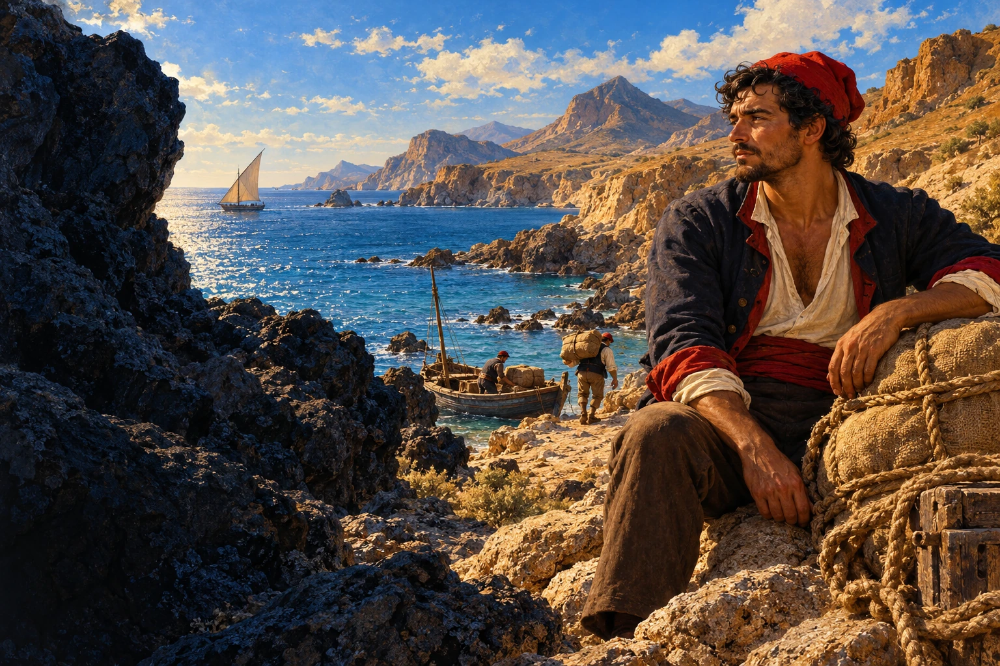
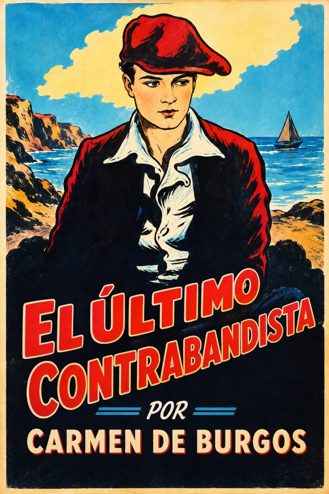

Audiolibros · Cuarta Ola
Carmen de Burgos · Novela · 1918
El último
contrabandista
Un valle con sus propias leyes.
Entre el mar y la sierra, una comunidad se sostiene.
El deseo y la lealtad ponen a prueba su equilibrio.

Escuchar un mundo entre la tierra y el mar.
Grabación próximamente
Volumen

El pulso de una comunidad
En los valles del Cabo de Gata, don Antonio Olivares dirige un negocio de contrabando del que dependen numerosas familias. La comunidad mantiene sus propios vínculos y códigos, mientras varias historias de amor, rivalidad y venganza atraviesan la vida del valle.
El peligro también nace dentro de aquello que nos une.
Carmen de Burgos da espacio a personajes, trabajos, celebraciones y costumbres. La costa no funciona únicamente como escenario de aventuras: pertenece a un mundo habitado. La lectura invita a seguir cómo las pasiones individuales alteran un equilibrio colectivo.
Texto e introducción de Concepción Núñez Rey en Novelas del ciclo de Rodalquilar II, Instituto de Estudios Almerienses (2017). La introducción documenta su publicación en 1918. Ilustración interpretativa.
La lectura
Lectura completa
Grabación próximamente. El índice de escucha se incorporará con las grabaciones.
Valoración

Bueno